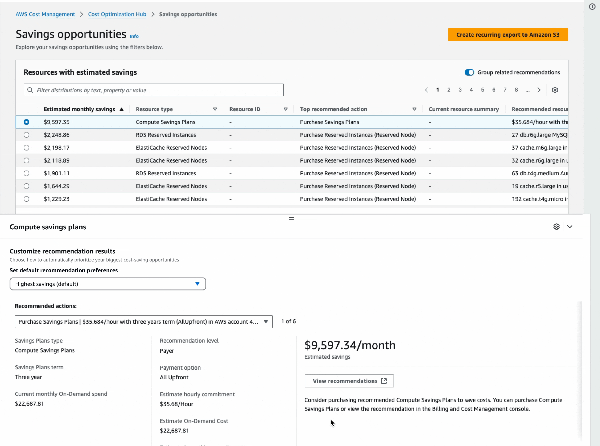

I would love to continue the discussion on how human-centered standardization can reduce cognitive load and ensure user control across complex systems. Feel free to email me or send me a message through LinkedIn.
Enabling customers to set default preferences
The initial design challenge was centered on placement tension. I asked the question, “Should new preferences settings interrupt the core recommendations flow, or be integrated into the low-traffic preferences tab?"
Customer insights
To answer this, I led discussions with the product team to explore this trade-off.
We surfaced a crucial "one-and-done" customer insight: customers treat preference settings as a one-time activity, rarely needing to change them later.
Based on this low-frequency usage insight, I decided that placing a prominent preferences selector on the main COH recommendations page would create visual noise and be a disturbance to the customer workflow. To test this out, I created a high-fidelity prototype exploring this layout.
Testing a prominent Savings Plans preference selector on the main COH page to assess visual noise and customer distraction.

The design choice
Instead, I integrated the preference options into the existing, low-frequency Preferences tab within the Account Management page. This aligned perfectly with the customer's "one-and-done" mentality.
For scalability, I validated a pattern using expandable dropdown components over simpler radio buttons. This pattern ensured the design wouldn't overcrowd existing options and could easily accommodate future preference types, all while leveraging customer familiarity established in existing Savings Plans purchase experiences.
Driving adoption
To ensure discoverability, I implemented an informational alert component on the main COH dashboard. This included a call-to-action (CTA) that actively prompted and guided first-time users directly to the preferences tab. Upon successfully setting preferences, a flash bar indicated success and provided an immediate CTA to navigate users back to COH to see their newly personalized recommendations.
As a result, this design restored customer control, transforming financial recommendations from intimidating mandates into flexible, personalized guidance.
Collaborated with our technical writer to draft content that clearly explains preference processing times and expected outcomes, reducing confusion around potential edge cases.
Complete journey detailing the discovery alert, configuration of scalable preferences, and the final flashbar confirmation that returns the customer to personalized recommendations.